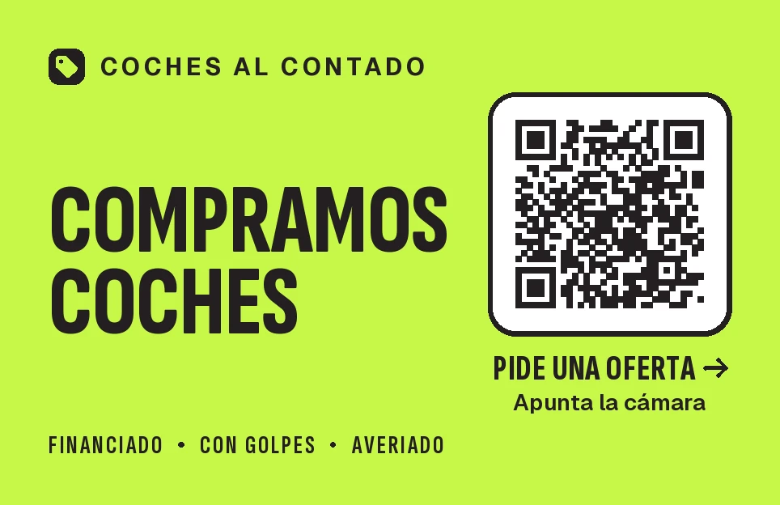
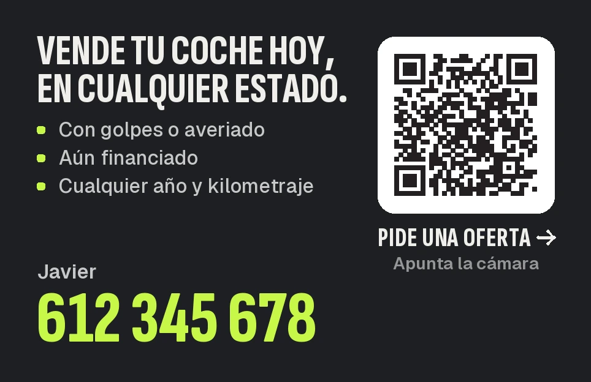

Pon tu código QR en tarjetas, pegatinas, carteles y en talleres colaboradores, o añade tu enlace a tu ficha de Google Maps. En cuanto un vendedor deja sus datos, te llega una notificación al móvil y llamas mientras aún busca comprador.
Pruébalo tú mismo ↓

Una tarjeta de ejemplo. La tuya lleva tu nombre, tu teléfono y tu color.
Cada sitio tiene su propio código o enlace, y la app muestra cuál te trae coches.
En el primer móvil, responde como lo haría un vendedor que escaneó tu código. En cuanto deja sus datos de contacto, la solicitud llega al segundo móvil con una notificación. Tócala, cambia el estado, añade una nota.
Una demo que funciona, con solicitudes inventadas y fotos de coches generadas por IA. Nada de lo que escribas sale de esta página.
Una tarjeta lista para imprimir en tus colores, y un código o enlace propio para cada sitio donde te anuncies, así ves cuáles te traen coches.
Tres pasos cortos sobre el coche, luego su número: la solicitud ya está en tu móvil. Historial, precio y fotos van después, todo opcional. Sin app ni cuenta.
El coche, su kilometraje y su estado. El nombre y el número del vendedor nunca aparecen en la pantalla de bloqueo.
Nuevas, en curso, compradas, descartadas. Notas, un toque para llamar o escribir, y estadísticas de qué te trae coches.
El formulario, la app y las tarjetas llevan el nombre, el color y el logo de tu negocio, en tu propia dirección web. Funciona en tu propia cuenta y las solicitudes son tuyas. Los datos de contacto del formulario y las fotos se borran 90 días después de cerrar la solicitud. Las notas del equipo se conservan por separado.